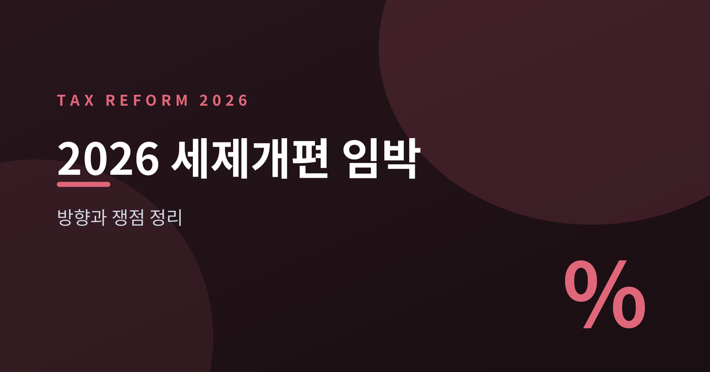
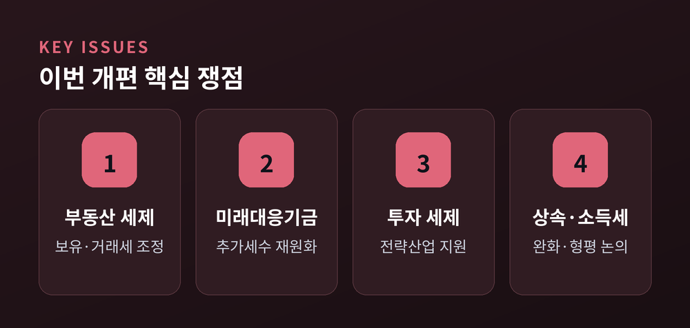
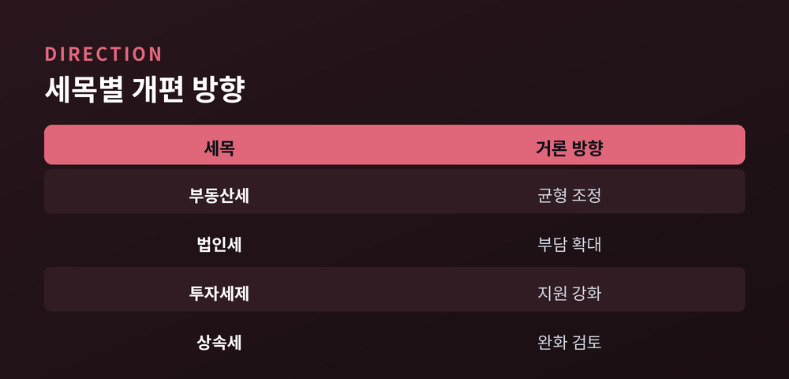
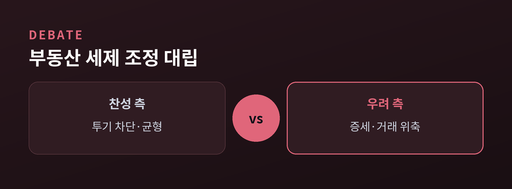
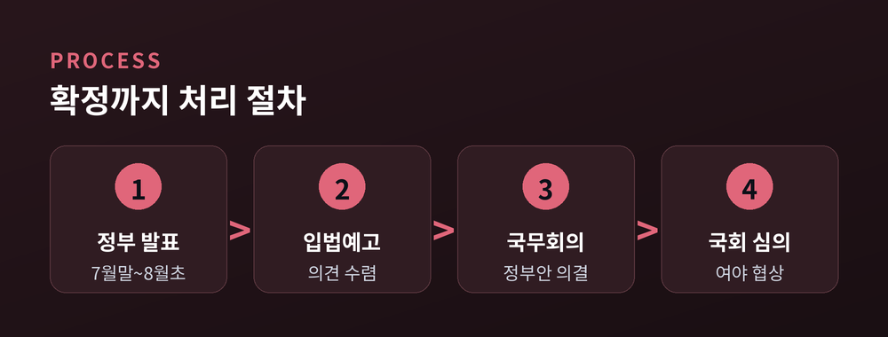

이재명 정부의 세제 방향과 쟁점 정리

이번 글에서는 발표를 앞둔 2026년 세제개편안을 차분히 정리해 보겠습니다.
무슨 일이 벌어지고 있는지, 왜 중요한지, 앞으로 어떻게 흘러갈지 순서대로 짚겠습니다.
특정 편을 들지 않고, 정부와 여야의 입장을 함께 담습니다.
세 줄 요약부터 드립니다.
첫째, 정부는 7월 말에서 8월 초 사이 세제개편안을 내놓을 전망입니다.
둘째, 부동산 보유세·거래세 조정과 반도체 호황發 '미래대응기금'이 핵심으로 거론됩니다.
셋째, 여당은 "책임 행정", 야당은 "증세"라며 맞서 국회 처리까지 진통이 예상됩니다.
발표가 임박했습니다.
구윤철 경제부총리는 부동산 세제 개편안을 "7월 말 정도"에 내겠다고 밝혔습니다.
김용범 대통령실 정책실장도 최종안이 "늦어도 8월 초"에 나온다고 언급했습니다.
세제개편안은 매년 여름 정부가 확정하는 이듬해 세법 개정 패키지입니다.
발표 뒤에는 입법예고와 국무회의를 거쳐, 정기국회 심의로 넘어갑니다.
법인세·소득세·부동산세·투자세제가 한꺼번에 다뤄지는 만큼 파장이 큽니다.
예전 개편은 감세 기조가 두드러졌습니다.
지금은 재정 확보와 균형 조정 쪽에 무게가 실린 분위기입니다.

배경은 재정 여건입니다.
IMF는 한국의 GDP 대비 정부부채 비율이 2025년 53.4%에서 2030년 64.3%로 오를 것으로 전망했습니다.
확장재정이 이어지며 늘어나는 재정수요에 대응할 세원이 화두가 됐습니다.
반도체 호황이라는 변수도 있습니다.
정부는 삼성전자·SK하이닉스의 올해 실적 호조로 법인세수가 크게 늘 수 있다고 봅니다.
이 '추가세수'를 중장기 재원으로 묶겠다는 것이 미래대응기금 구상입니다.
기금은 AI·반도체·조선·항공 같은 미래산업과 청년 교육·창업에 투입한다는 방침입니다.
당정은 지난 7월 13일 기금 신설 정부안을 발의하기로 뜻을 모았습니다.
다만 반도체 이익은 경기에 민감해, 안정적 재원으로 보긴 이르다는 신중론도 있습니다.
정부는 개편의 명분으로 '응능부담' 원칙을 듭니다.
부담 능력이 큰 쪽이 더 내는 구조로 재정을 떠받치겠다는 취지입니다.
전략산업에는 R&D·투자 세제지원을 넓히고, 지방 근무자에게는 소득세 감면도 검토됩니다.

가장 뜨거운 지점은 부동산 세제입니다.
정부는 "실거주 1주택은 보호하고, 투기는 차단한다"는 원칙을 내세웁니다.
보유세와 거래세를 함께 손봐 전체 부담의 균형을 맞추겠다는 것입니다.
여당은 이를 투기를 막기 위한 책임 행정으로 규정합니다.
반면 야당은 지방선거가 끝난 뒤의 조정을 "증세 본색", "세금폭탄"이라 비판합니다.
대통령이 참석한 부동산 토론회를 두고도 "답정너"라는 공방이 오갔습니다.
상속세는 결이 다릅니다.
대통령이 공제 확대 의지를 밝혀 완화 쪽으로 거론되나, 세수 감소 부담이 변수입니다.
공제를 10억에서 18억 원으로 넓히면 5년간 3조 원 넘는 세수가 줄 수 있다는 추정도 있습니다.
소득세도 논점입니다.
과표에 물가를 반영하자는 법안을 여야 의원이 함께 냈지만, 정부는 형평에 맞지 않다며 유보적입니다.
이렇게 증세와 감세 요소가 한 개편안에 뒤섞여, 셈법이 단순하지 않습니다.

절차는 정해져 있습니다.
정부 발표 뒤 입법예고와 국무회의를 거쳐 정기국회에서 다뤄집니다.
쟁점 항목은 원안대로 통과되기보다 협상 과정에서 조정될 가능성이 큽니다.
여당이 다수 의석을 쥐고 있어도 순탄치만은 않아 보입니다.
감세와 증세가 함께 담겨, 당내와 전문가 사이에서도 의견이 갈립니다.
부동산세는 거래 위축 우려와 실거주 중심 재편 필요성이 팽팽히 맞섭니다.
발표 이후의 수치와 세부 설계가 실제 승부처가 될 것입니다.

정리하면 이렇습니다.
이번 개편은 재정 확보와 시장 조정, 두 목표 사이에서 균형점을 찾는 시도로 읽힙니다.
방향이 옳은지 그른지는 아직 단정하기 이릅니다. 숫자가 나와야 판단할 수 있습니다.
"세금은 결국 우선순위를 드러내는 선택입니다."
발표된 개편안이 그 우선순위를 어떻게 담아낼지, 차분히 지켜볼 일입니다.
참고 소스